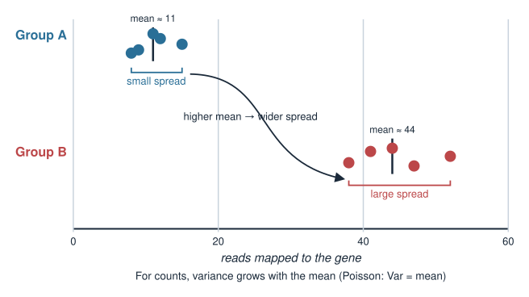
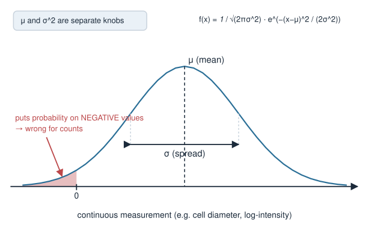
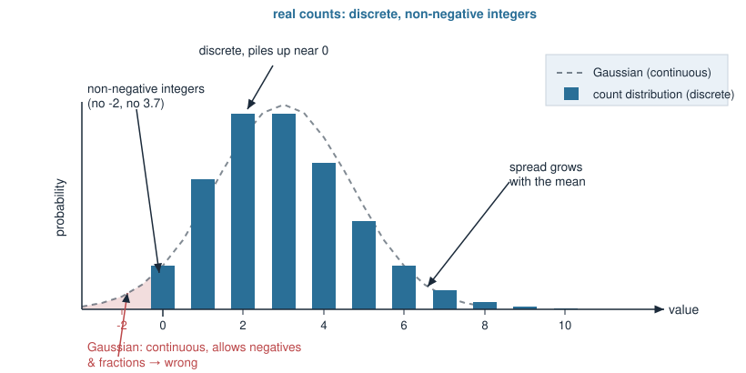
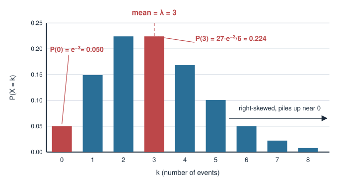
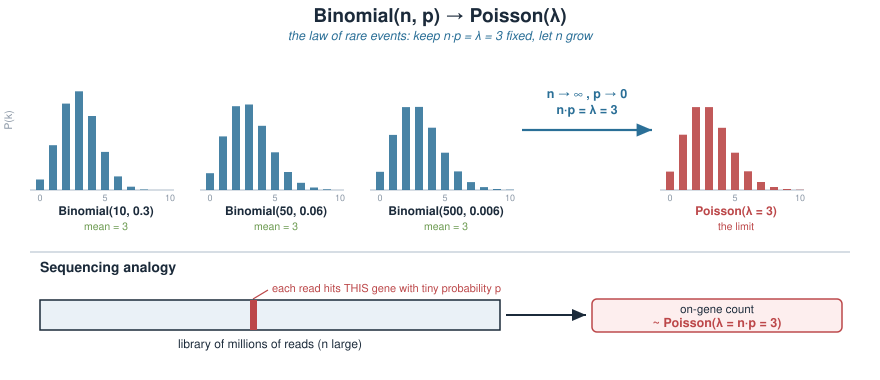
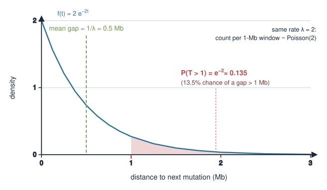
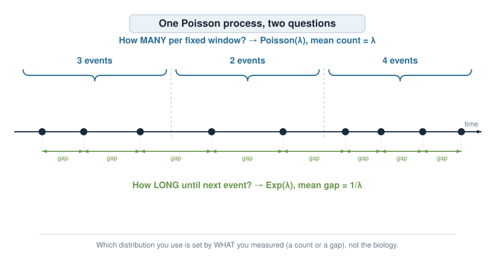
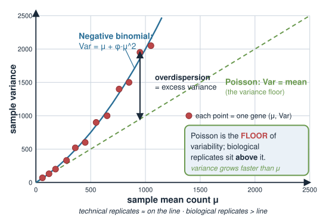
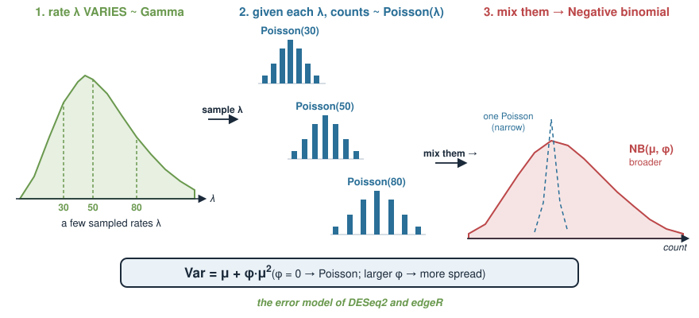
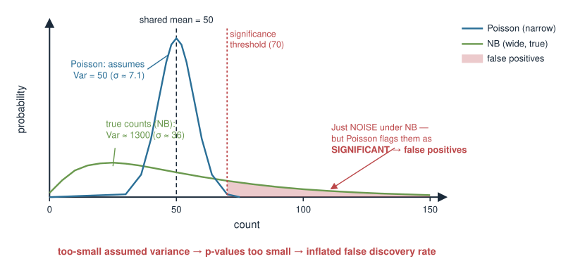

Every statistical analysis makes an assumption about how the data scatter around the truth — the error model, or likelihood. Choosing it well is most of the battle in genomics.
What an error model is: the probability distribution you assume generated your data.
Gaussian for continuous measurements; Poisson for counts; exponential for waiting times; negative binomial for overdispersed counts.
The signature of Poisson counts: mean = variance.
Why real RNA-seq counts break Poisson (overdispersion) and need the negative binomial.
Why the wrong error model misleads — the practical cost is false discoveries.
Provisional block
This block (“Bayesian statistics”) is provisional and may move to a later statistics / machine-learning course. Treat the placement as a working draft, not a contract.
A biology picture first
You sequence RNA from two groups of cells and, for one gene, count how many reads map to it in each sample:
Group A: 12, 9, 15, 11, 8
Group B: 41, 38, 52, 44, 47
You want to know if the gene is differentially expressed. A first instinct from earlier stats courses: run a t-test, which assumes the data are Gaussian with constant variance.
But look: group B has a much larger spread than group A. That is not sloppy data — it is what counts do. A t-test’s constant-variance assumption is already wrong here.

What is an error model?
A measurement is signal + noise. The error model is the probability distribution you assume for the noise — equivalently, the distribution the data are drawn from given the underlying truth.
Two separate parameters: mean \(\mu\) and variance \(\sigma^2\) (spread is independent of the mean).
Good for: protein concentration, cell diameter, \(\log\)-transformed intensities, height, temperature.
The default assumption behind the t-test, linear regression, and lm.
It can take any real value — including negatives — which is exactly why it is wrong for counts.

Counts are not Gaussian
Sequencing gives counts: reads per gene, molecules per cell, variants per kilobase, colonies per plate. Counts have structure a Gaussian ignores:
Non-negative integers — you cannot observe \(-2\) or \(3.7\) reads.
Discrete, especially near zero (many genes have 0, 1, 2 reads).
Spread grows with the mean — highly expressed genes vary more, in absolute terms, than lowly expressed ones (we saw this in the two groups).
A distribution built for counts should be discrete, non-negative, and let variance depend on the mean. That distribution is the Poisson.

Poisson: the count distribution
The Poisson distribution models the number of independent events in a fixed interval (of time, space, or sequencing depth), occurring at constant average rate.
The distribution is right-skewed for small \(\lambda\) and piles up near zero; as \(\lambda\) grows it becomes more symmetric.
# probabilities for counts 0..8 when lambda = 3lambda <-3k <-0:8dpois(k, lambda) # P(X = k)mean_sim <-mean(rpois(1e5, lambda)) # ~ 3var_sim <-var(rpois(1e5, lambda)) # ~ 3 -> mean = variance

Where Poisson comes from: rare events
Poisson is the limit of many independent trials, each with tiny success probability.
\(n\) reads in a library, each landing on our gene with small probability \(p\).
Total on-gene reads is \(\text{Binomial}(n, p)\); as \(n \to \infty\), \(p \to 0\) with \(np = \lambda\) fixed, this becomes \(\text{Poisson}(\lambda)\).
That is precisely the sequencing picture: millions of reads, each with a tiny chance of hitting any one gene. So idealised counts of independent molecules are Poisson.
This same “stream of random events” also has a waiting-time description — which is where the exponential enters.

Exponential: waiting times
The exponential distribution models the waiting time until the next event in a stream of random events occurring at rate \(\lambda\).
So there is a ~13.5% chance of a gap longer than 1 Mb.
lambda <-21-pexp(1, rate = lambda) # P(T > 1) = e^{-2} ~ 0.135mean(rexp(1e5, rate = lambda)) # ~ 0.5 = 1/lambda# count of events in a 1-Mb window is Poisson(lambda) -- same processmean(rpois(1e5, lambda)) # ~ 2

Two views of one process
The Poisson process is a single model of random events at rate \(\lambda\), seen two ways:
Question
Distribution
Parameter meaning
How many events in a fixed window?
\(\text{Poisson}(\lambda)\)
mean count \(= \lambda\)
How long until the next event?
\(\text{Exp}(\lambda)\)
mean wait \(= 1/\lambda\)
Counts in a window \(\to\) Poisson.
Gaps between events \(\to\) exponential.
Same underlying randomness, different question. Which one you use is set by what you measured, not by the biology alone.

Real counts are overdispersed
Poisson makes a strict promise: variance = mean. Real RNA-seq counts break it — their variance is larger than the mean. This excess is called overdispersion.
Why? Poisson assumes every sample has the identical underlying rate. But biological replicates differ:
genetically and environmentally variable individuals,
cell-state and batch differences,
the true rate \(\lambda\) itself varies from sample to sample.
Extra variation in \(\lambda\) adds variance on top of the Poisson counting noise. Technical replicates can look Poisson; biological replicates almost never do.

Negative binomial: overdispersed counts
The negative binomial (NB) is a count distribution with a separate dispersion knob, letting variance exceed the mean.
The extra \(\phi\mu^2\) term is why highly expressed genes vary disproportionately more.
It arises naturally as a Poisson whose rate \(\lambda\) is itself Gamma-distributed — exactly the “rate varies between samples” story.
The workhorse error model of DESeq2 and edgeR for RNA-seq differential expression.

Why the wrong model misleads
Using an error model whose variance is too small makes you overconfident — you declare differences “significant” that are just noise.
Gaussian / t-test on counts: assumes one shared variance and allows negative values; mis-estimates spread, especially for low counts and near zero.
Poisson on overdispersed RNA-seq: variance assumed \(= \mu\), but true variance is \(\mu + \phi\mu^2\) (larger). The test understates noise \(\Rightarrow\) p-values too small \(\Rightarrow\)inflated false positives.
# same mean (mu = 50), very different spreadmean(rpois(1e5, 50)); var(rpois(1e5, 50)) # ~50, ~50mu <-50; size <-2# NB: size = 1/phimean(rnbinom(1e5, mu = mu, size = size)) # ~50var(rnbinom(1e5, mu = mu, size = size)) # >> 50 (overdispersed)
Right shape, right conclusions. The error model is not a technicality — it sets your false-discovery rate.

Choosing the error model
Match the data type to the distribution:
Your data
Distribution
Key feature
Continuous, symmetric spread
Gaussian\(\mathcal{N}(\mu,\sigma^2)\)
mean and variance independent
Counts, idealised / technical
Poisson\((\lambda)\)
variance = mean
Counts, biological replicates
Negative binomial\((\mu,\phi)\)
variance = \(\mu + \phi\mu^2\)
Waiting times / gaps (continuous, \(\ge 0\))
Exponential\((\lambda)\)
memoryless, mean \(1/\lambda\)
Diagnostic: for counts, compare the sample variance to the sample mean. Variance \(\approx\) mean \(\to\) Poisson may do; variance \(\gg\) mean \(\to\) overdispersed, use NB.
Summary
Idea
Key fact
Error model
the distribution you assume generated the data (the likelihood)
Gaussian
continuous, symmetric; mean and variance independent
Poisson
counts; variance = mean = \(\lambda\); limit of many rare events
Exponential
waiting times/gaps; memoryless; mean \(1/\lambda\)
Poisson process
one process: counts \(\to\) Poisson, gaps \(\to\) exponential
Connects to: the prior, likelihood and posterior unit (this likelihood plugs into Bayes’ theorem); the Poisson and negative binomial distributions for count data.